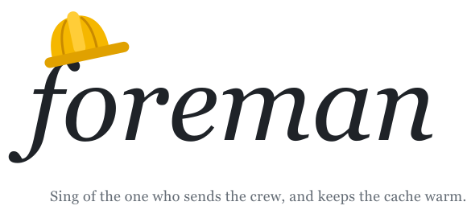

Foreman runs a coding project in Kimi Code with one lead agent and a crew of workers. The lead plans and writes a brief for each task. A worker takes one brief, opens one pull request, and stops. Every agent stays small and its cache stays warm, so your usage limit lasts the week.
Each block is one agent, and its height is the context it re-read on every call. The lead is the long grey band. The workers under it are short and low, which is the point. Hold Ctrl or ⌘ and scroll to zoom, drag to pan. Projects, pull requests and tasks are anonymous.
Row height is context: 0 to 1M tokens for the lead, 0 to 600k for workers. Zoom in to see a single worker. Times are in your time zone.
You type /skill:foreman in a session — /foreman works too — and that session becomes the lead. It does not write code, debug or run tests. It sends one of these, with a brief. All of them run on the session's secondary model, which you set once with /secondary-model.
| Worker | Job | Sent | Median peak |
|---|
You need Kimi Code. The plugin carries the skill and the five worker profiles.
/plugins install https://github.com/chengluyu/foreman
/reload
/skill:foreman
From a local checkout, /plugins install <path> does the same. Or by hand: copy skills/foreman/ to ~/.kimi-code/skills/foreman/ and agents/foreman-*.md to ~/.agents/agents/. The first time in a repository, the lead asks four questions and writes the answers into the repository's handover file.